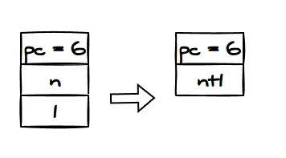
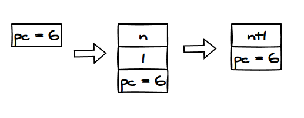
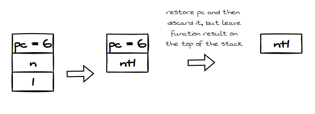
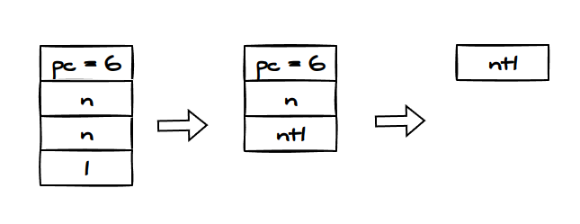
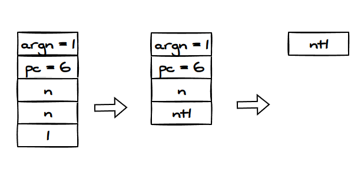
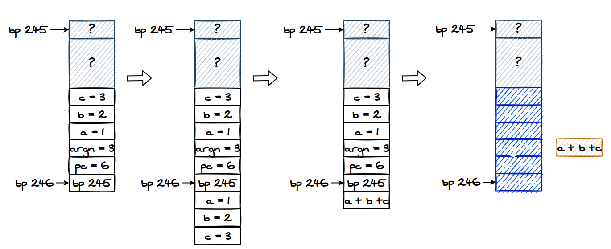
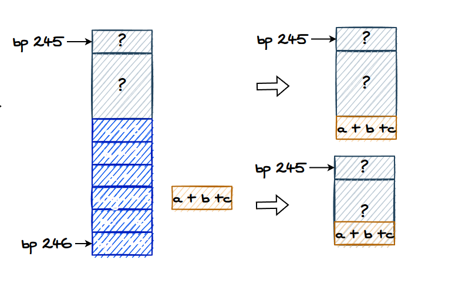
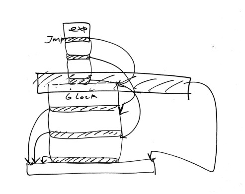

用 Rust 实现 Lua(2): 代码生成和 Stack Machine
Stack-based 虚拟机
>>第一篇文章<< 中我写了 parser，parser 生成 抽象语法树 AST，AST 由编译器编译成可执行文件，可执行文件在虚拟机上运行。如下面代码所示。
let raw: Vec<char> = contents.chars().collect();
let tokens = lex::lex(&raw);
let ast = parse::parse(&raw, tokens);
let pgrm = eval::compile(&raw, ast);
eval::eval(pgrm);
可执行文件由指令和符号组成，参考 ELF 文件格式。
虚拟机执行可执行文件，将指令 decode 成栈操作，所以这种虚拟机也叫 stack-based 虚拟机或者 stack machine。
用栈来执行树并不是陌生操作，最简单的例子是用非递归的方式去遍历树，这时候要么用队列，要么用栈。用栈来实现中序遍历和后序遍历。而一般语法树使用 reverse Polish notion, 这种记法只能用后序遍历。此外像数据库常用的 DAG (directed acyclic graph) 也只能后序遍历。
Stack machine 避免使用处理器的寄存器，我在>>另外一篇文章<<实现了递归到栈运算的转换，用栈空间替代了寄存器。但这并不是彻底的 stack machine, 因为我用栈之外的存储空间模拟了寄存器，保存了 eax 和 edi。这也不难解决，直接将这两个寄存器放入栈中即可，创造另外一个 calling convention。另外我用 goto hack 了 rip (program counter)，这也完全可以用 vector + 偏移量代替。
虽然这不是陌生操作，但将栈抽象成虚拟机，则是罕见的。我觉得这种概念分层很重要，抽象意味着更广泛的应用。
龙书
讲真，开始动手之后，发现自己严重欠缺相关知识，于是看了龙书的 8.1-8.7。
不看优化和寄存器相关章节，所以阅读难度相对较小。
收获： 0, 除了知道 three-address code, activation record(栈的另一种说法) 这些牛逼名词，龙书实现的是 register-based VM, 和我的目标 stack-based VM 不一样。
结论：继续自己设计 calling convention
指令
我们只运行这一段 Lua 代码：
function fib(n)
if n < 2 then
return n;
end
local n1 = fib(n-1);
local n2 = fib(n-2);
return n1 + n2;
end
fib(30);
涉及到的汇编指令为：
- ADD(
+) - SUBTRACT(
-) - LESS_THAN(
<) - RETURN(
return) - COMPARE(
if n < 2) - MOVE(
local n1 = ...) - CALL(
fib)
初步定这几个指令，边写边改
Parser 的改进
本来 exp binop exp 的 AST 应该是:
pub struct Binop {
pub lhs: Box<Exp>,
pub op: Op,
pub rhs: Box<Exp>,
}
最后只能递归成如下所示, 问题在于, 在编译的时候还得把它还原成非递归的 vector 才好操作, 因此不如在 parsing 阶段直接将 Binop 解析成 vector。这里还有一个问题，即 1+2+3 只能解析成 1+(2+3)
Binop {
lhs: Number(
Integer(
1,
),
),
op: Plus,
rhs: Binop(
Binop {
lhs: Number(
Integer(
2,
),
),
op: Plus,
rhs: Binop(
Binop {
lhs: Number(
Integer(
3,
),
),
op: Plus,
rhs: Binop(
Binop {
lhs: Number(
Integer(
4,
),
),
op: Plus,
rhs: Number(
Integer(
5,
),
),
},
),
},
),
},
),
改成这样:
pub struct Binop {
exps: Vec<Exp>,
ops: Vec<Op>
}
Parsers:
pub fn binop(input: LocatedSpan) -> IResult<(Vec<Exp>, Vec<Op>)> {
let parser = tuple((ws(simple_exp), op, ws(exp_rec)));
map(ws(parser), |(lhs, op, mut rhs)| {
rhs.0.push(lhs);
rhs.1.push(op);
rhs
})(input)
}
fn simple_exp(input: LocatedSpan) -> IResult<Exp> {
alt((map(funccall, Exp::FuncCall), number, ident))(input)
}
pub fn exp_rec(input: LocatedSpan) -> IResult<(Vec<Exp>, Vec<Op>)> {
alt((binop, map(simple_exp, |e| (vec![e], vec![]))))(input)
}
pub fn exp(input: LocatedSpan) -> IResult<Exp> {
map(exp_rec, |(mut exps, mut ops)| {
if ops.is_empty() {
exps.pop().unwrap()
} else {
Exp::Binop(Binop { exps, ops })
}
})(input)
}
不用树的形式表示 IR 并没有错，树只是 IR 的一种表现形式（龙书说的）。nom 提供的 combinator 就只能这么用，See for yourself: https://github.com/Geal/nom/blob/main/doc/choosing_a_combinator.md 。这让我想起许多年前高考作文指南说：高考作文是戴上锁链跳舞。不一样的是，高考作文在对人的启发或教育上毫无意义。
虚拟机
先写一个简单的虚拟机：
fn run(&mut self) {
while self.pc < self.prog.commands.len() {
let cmd = &self.prog.commands[self.pc];
self.pc += 1;
match cmd.instruction {
Instruction::Push => {
self.prog
.stack
.push(cmd.operands.as_ref().unwrap().last().unwrap().clone());
}
Instruction::Add => {
let rhs = self.prog.stack.pop().unwrap();
let lhs = self.prog.stack.pop().unwrap();
let res = lhs + rhs;
self.prog.stack.push(res);
}
Instruction::Subtract => {
let rhs = self.prog.stack.pop().unwrap();
let lhs = self.prog.stack.pop().unwrap();
let res = lhs - rhs;
self.prog.stack.push(res);
}
_ => {}
}
}
}
写法就是这样
Calling Convention
由于我们不参考任何资料，自己设计一个 calling convention，那么就不能想得太周全，写一点测一点
1. 最简单的开始
将这段代码
function f(n)
return n+1;
end
f(n);
翻译成：
jmp 5
push n
push 1
add
ret
call 1
为什么第一步是 jmp 5 ? 说来话长，因为 call 1 的存在。我希望一次性翻译完毕（one-pass), 而不是像上面提到的写汇编器的时候那样 two-pass。因此必须要固定函数定义的位置，那么，唯一的做法就是，在遇到函数的时候，提前将定义写入，调用者可以查符号表，填写 call 的 operand。
单元测试：
#[test]
fn test_simple_func() {
let arithmetic = parse(
r#"
function f(n)
return n+1;
end
f(n);
"#,
);
let mut compiler = Compiler::new();
let res = compiler.compile(&arithmetic.0);
let = disassemble(res.as_ref().unwrap());
assert_eq!(
,
r#"jmp 5
push n
push 1
add
ret
call 1
"#
);
2. 从函数中返回需要指定 pc/ip
当代码执行到 call 1 的时候，虚拟机知道 pc = 5, 但是，代码跳到 f() 的时候，不可能给他加一个 jmp 5， 因为可能在 pc = 100 处也有一个 call 1，如果写死，加一个 jmp 100, 那函数就是失去了通用的意义。所以，只能将 pc 记录在栈中, 改写 f() 的代码：
push n
push 1
add
restore pc <= stack_top(+1)
实际上， 不能将 pc 设置为 5， 不然重新执行一遍 f()

这样， ret 将根据我们定的协议(calling convention/protocol)，指导虚拟机恢复 pc。为什么不把 pc 放在下面？如下图所示

因为这么做违反了 stack-based VM 的原则：每一个指令执行的结果必须在栈顶。但是，你非要这么做也行，只是多了许多无谓的 push/pop, 比如从第一帧到第二帧，至少有：
pop pc => memory
push n
push 1
push pc
于是，我们得出结论，当执行 call 的时候，将 pc 放入栈中，这部分逻辑不需要体现在汇编中，在虚拟机的实现中实现即可。
Instruction::Call => {
self.prog.stack.push(Operand::Offset(self.pc));
self.pc = cmd.operands.as_ref().unwrap()[0].to_offset().unwrap();
}
问题又来了：那么 ret 应该怎么实现？这里有一个方法：如图所示

Instruction::Ret => {
self.pc = self.prog.stack[self.prog.stack.len() -2].to_offset().unwrap();
let res = self.prog.stack.pop().unwrap();
self.prog.stack.pop();
self.prog.stack.push(res);
}
3. 必须有 %bp
上面的 lua 代码有很严重的问题，就是我们不知道 n 是什么，但编译器也翻译了，那么，当 pc 跳转到 1 的时候，怎么知道 f() 的参数是什么？我应该在这设置一个逻辑：检测到未声明的变量的时候报错。但目前最重要的，是如何 interpret call 1 ，让函数代码知道参数的存在。
完全可以将函数的信息，包括参数，记录在一个哈希表中，创造一个指令 LOAD, 从哈希表中读取数值，将 push n 改成 load n
这样一来，速度比寄存器还慢，因为哈希表在内存中。内存比寄存器慢。
但是 stack-based VM 的目的就是丢弃寄存器，某种程度上，内存可以说是大寄存器，如果大量利用内存，那效率肯定是极低的，造成不少 cache miss, 特别是哈希表这种东西的涉及到非连续内存。
因此，必须将参数放在栈中。已知，目前放在栈中的信息包括 ip/pc。参数和 pc 的位置无所谓先后，只要将协议确定下来就行。

既然将信息保存在栈中，就必须在退场的时候清场。那么多个参数的时候如何处理？pop 多个参数？因为参数的数量是固定的，所以确实能够写死。但是，一个参数数量为 2 的函数的 ret 和参数数量为 3 的函数的 ret 表达一样的语义吗？虚拟机是无法理解的，因此，必须把参数的数量也 push 到栈中。

另外一种方法，和作弊一样，那就是借鉴 x86 的 calling convention, 用一个 frame pointer 作为每一个函数栈帧的起始点，那么在清场的时候，直接将 stack pointer 指向以前的 frame pointer，根本不需要 pop。
栈帧的方法非常的经济，而且即使是对 Rust 这么远离指针，不够直截了当的语言而言，仅仅需要执行 stack.resize()，同时，由于不需要运行多次 pop 来清场，因此不需要将函数参数放入栈中。
有人会说，这 TM 还不是用了 %bp 寄存器了么？ 对，是，正是如此，我们发誓不用这东西，但不代表我们的逻辑没有 %bp 的概念，只是说它不用物理高速缓存，即便我不用一个变量表示 %rbp, 我依然可以偷偷用一个概念表示 stack_pointer 减去某个偏移量，也就是说，非物理的模拟的 %bp 依然存在。既然这样，不如就光明正大地声明一个 %bp。你无法做到虚拟机完全无状态。
另外，我们也无法避免使用 %ip, 否则，无法处理函数跳转。既然我们能接受将 %ip, 放入栈中，并认为它是虚拟机的一个状态，那么，%bp 为何不可？
但有人连逻辑上的 %bp 也不能接受。这样不是没有办法。但会导致汇编异常复杂：
1. load 3
2. load 5
3. load 6
4. load 2
5. load 2
6. add
7. load 1
8. add
9. ret
load 2表示从当前 sp 往上 2 个单元提取数值
以上代码实现了:
function f(a, b, c)
return a + b + c;
end
这就过于复杂了，我也这么尝试过，我在实现的过程中，发现无法精准地定位 load，以及 store这些指令的偏移量，每一个位置的计算都和当前所在的 pc 有关，而且，这还是处在编译阶段，pc 只是一种预测。总而言之，涉及的状态太多了，没必要这么自讨苦吃。
fn compile_funcdef(&mut self, funcdef: &FuncDef) -> Result<Vec<Command>> {
self.symtable.insert(
Sym {
name: funcdef.name.clone(),
sym_type: SymType::Func,
},
SymInfo {
i_offset: self.commands.len(),
digest: Digest::FuncSign(FuncSign {
params: funcdef.body.params.to_vec(),
}),
},
);
let mut param_code = Vec::new();
let mut i = funcdef.body.params.iter().peekable();
let bp = 0;
let mut sp = bp;
let mut arg_offset = 2;
while i.peek().is_some() {
let var = i.next();
param_code.push(Command {
instruction: Instruction::Load,
operands: Some(vec![Operand::Offset(
sp - bp + arg_offset
)]),
});
sp += 1;
arg_offset += 1;
}
let mut block = self.compile_block(&funcdef.body.block).unwrap();
self.commands.append(&mut param_code);
self.commands.append(&mut block);
Ok(Vec::new())
}
fn compile_local(&mut self, local: &Local) -> Result<Vec<Command>> {
let mut res: Vec<Command> = Vec::new();
let lhs = &local.lhs;
let rhs = &local.rhs[0];
res.push(Command {
instruction: Instruction::Push,
operands: Some(vec![Operand::Ident(lhs.clone())])
});
res.append(&mut self.compile_exp(rhs).unwrap());
res.push(Command {
instruction: Instruction::Store,
operands: Some(vec![Operand::Offset(1)])
});
Ok(res)
}
这种实现是没有前途的，因此，必须有 %bp。
4. 实现 call, ret
修改测试语句，造出 3 参数函数：
function f(a, b, c)
local d = a+b+c;
return d;
end
f(1, 2, 3);
使用 %bp，call 可以写成
push c
push b
push a
push N ; N 为参数数量
push %ip
push %bp
f() 写成：
load 3
load 4
load 5
load -1
load -2
add
load -3
add
ret
ret 实现为：
- 缓存栈顶的元素 e
- 提取以前的 bp，将 stack resize 到 bp 位置
- 获取往上一个偏移量的 ip, 还原虚拟机的 ip/pc
- 根据参数数目弹出参数
- 将 e 放入栈顶
注： 将 argument 和 parameter 反方向排放没有任何理由，只要你开心，你可以把第二个参数第一个入栈

最后：

最后测试：
fn test_simple_func() {
let arithmetic = parse(
r#"
function f(a, b, c)
local d = a + b + c;
return d;
end
f(1, 2, 3);
"#,
);
let mut compiler = Compiler::new();
let res = compiler.compile(&arithmetic.0);
let = disassemble(res.as_ref().unwrap());
assert_eq!(
,
r#"jmp 13
load -3
load -4
load -5
pushe
load 1
load 2
add
load 3
add
store 4
load 4
ret
push 3
push 2
push 1
push 3
call 1
halt
"#
);
assert_eq!(
eval(res.as_ref().unwrap()),
Operand::Number(Number::Integer(6))
);
}
}
}
可以看到编译出来的汇编非常操蛋，但是幸运的是，测试通过了。
5. 最后一块拼图：if-else
需要给 jmp 确定地址，对于这一块，只能用相对地址，毕竟我们的设计是 one-pass translation。

实现:
fn compile_cond(&mut self, cond: &Cond) -> Result<Vec<Command>> {
let mut exps = Vec::new();
let mut blks = Vec::new();
let mut e_tt = 0;
let mut b_tt = 0;
for (exp, block) in &cond.pairs {
let r = self.compile_exp(exp).unwrap();
e_tt += r.len();
exps.push(r);
let r = self.compile_block(block).unwrap();
b_tt += r.len();
blks.push(r);
}
e_tt += exps.len();
b_tt += blks.len();
let end_of_exps = Command {
instruction: Opcode::Jmpr,
operands: Some(vec![Operand::Offset(b_tt as i32 + 1)]),
};
let mut blk_depth = 0;
for i in (0..exps.len()) {
// current span = plus one jmp inst.
let n = exps[i].len() + 1;
dbg!(n);
e_tt -= n;
// plus one final jump to exit the condition block
let offset = e_tt + blk_depth + 1 + 1;
exps[i].push(Command {
instruction: Opcode::Jgr,
operands: Some(vec![Operand::Offset(offset as i32)]),
});
let n = blks[i].len() + 1;
b_tt -= n;
let offset = b_tt + 1;
blks[i].push(Command {
instruction: Opcode::Jgr,
operands: Some(vec![Operand::Offset(offset as i32)]),
});
blk_depth += n;
}
let mut res = Vec::new();
for mut e in exps {
res.append(&mut e);
}
res.push(end_of_exps);
for mut b in blks {
res.append(&mut b);
}
Ok(res)
}
这个逻辑实现起来出乎意料地轻松。
结果：
fn fib(n: i32) -> i32 {
if n < 2 {
return n;
}
fib(n - 1) + fib(n - 2)
}
#[test]
fn test_fib() {
let arithmetic = parse(
r#"
function fib(n)
if n < 2 then
return n;
end
local n1 = fib(n-1);
local n2 = fib(n-2);
return n1+n2;
end
fib(10);
"#,
);
let mut compiler = Compiler::new();
let res = compiler.compile(&arithmetic.0);
let = disassemble(res.as_ref().unwrap());
for i in .1 {
println!("{}", i);
}
assert_eq!(
eval(res.as_ref().unwrap()),
Operand::Number(Number::Integer(fib(10)))
);
}
汇编为：
jmp 28
load -3
pushe
pushe
load 1
push 2
subtract
jgr 2
jmpr 4
load 1
ret
jgr 1
load 1
push 1
subtract
push 1
call 1
store 2
load 1
push 2
subtract
push 1
call 1
store 3
load 2
load 3
add
ret
push 10
push 1
call 1
halt
搞定！
代码写得一团遭，也不像在写 Rust，我也只针对一小块 Lua 代码写了实现，不过最关键的部分 calling convention 已经完成。根据 Engineering A Compiler: 编译器的编写原则有二，一是实现源代码的语义，二是做出优化。这篇文章或者这个练习至少符合第一个原则。优化则是下一个话题，到时候我将另起炉灶，从 scanner 开始写起。
结论
- Parsing 是最简单的事情，唯一的难点在于使用 nom
- 强迫自己设计一个 calling convention 颇有好处，更加理解了 compile time 和 run time 的区别
- 这一切的意义源自对 nom 的学习，但进而行驶到 compiler 这个深奥的领域，以前我都在隔岸观火，现在水到渠成，我的下一个目标是继续深入。
- 对 stack machine 还需要更多了解，我唯一的了解就是将栈顶 2 个元素投入 ALU 计算，结果放入栈中，避免使用寄存器。但在具体实现中我无法避免用到状态变量。